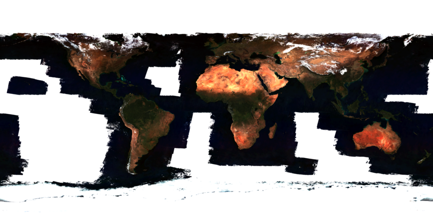

GDALでGCOM-Cの可視領域のデータからTrue Colorイメージを再構成してみた
この記事は、FOSS4G Advent Calendar 2019 の12月8日の記事です。 昨日の記事は、 northprintさんの「mapboxのMaps SDK for Androidでお好みのラスタータイルを表示する」 でした。
TL;DR
今回は2017年の12月に打ち上げられた、気候変動観測衛星「しきさい」(GCOM-C)の可視領域の数値データを、 GDAL2.4で再構成することで、True Color Imageに再構成してみました。
結果は、こんな感じになりました。欠損値は透明にしてあります。
 (Original data provided by JAXA)
あと再構成プログラムをC++で書きましたが、Pythonのほうがよかったかも…
「しきさい」の概要
気候変動観測衛星「しきさい」は、地球環境変動観測ミッション(GCOM)の陸域版の衛星です。 GCOMは地球から放射される様々な光を長期間観測することで、地球の気候変動の監視と メカニズムの解明を目的としたプロジェクトです。水循環を観測するGCOM-Wと、気候変動を観測する GCOM-Cという二つの衛星で観測を行っています。 GCOM-Cに搭載されている、SGLIという多波長光学放射計は、可視、近赤外、近紫外領域の 19の観測波長帯を持っています。
今回は、可視領域の観測データをTrue Colorイメージを作成してみます。
データの入手方法
まずは、GCOM-Cの観測データを入手しましょう。 JaxaのG-Portal(https://gportal.jaxa.jp/gpr/) というページでユーザー登録をすると、FTPで データをダウンロードすることができます。また、G-PortalのWebサイトにログインすると データの検索やダウンロード、フォーマット変換ができるようです。 私はデータ変換を自動化する必要がある別の目的があるので、あえて自分でやることにします。 詳しくは 「G-Portal 地球観測衛星データ提供システムユーザ向け取扱説明書」と 「気候変動観測衛星「しきさい」(GCOM-C) データ利用ハンドブック」を参照してください。
それでは、FTPサーバにログインして、/standard/GCOM-C/GCOM-C.SGLI 以下にある、L3.LAND.RV03、L3.LAND.RV05、L3.LAND.RV07 から同じ日付のデータを ダウンロードします。
今回は2019年11月の1ヶ月間に観測された平均値を使用しました。ダウンロードしたファイルは以下のとおりです。
- GC1SG1_20191101D01M_D0000_3MSG_RV03F_1001.h5
- GC1SG1_20191101D01M_D0000_3MSG_RV05F_1001.h5
- GC1SG1_20191101D01M_D0000_3MSG_RV07F_1001.h5
ファイル名の後ろのほうにある、RV03、RV05、RV07はプロダクトIDとよばれる観測から得られた物理量の種類を 示すIDです。RVxxのIDを持つプロダクトは陸域の大気補正済みの反射率で、RV03が青、RV06が緑、RV07が赤の光に 相当します。
各データに関しては 「SGLI高次プロダクト フォーマット説明書」 を参照してください。
データの再構成
では、ダウンロードしたデータを再構成していきます。ダウンロードしたファイルはHDF5という形式で保存されています。 HDF5はデータやパラメータを階層的に保存できる形式で、観測値だけでなく観測した時間や、処理したアルゴリズム、パラメータ等も いっしょに一つのファイルに格納できるすぐれものです。このHDF5形式のファイルからデータを取り出して、GDALを使って GTiff形式に変換します。
可視画像は、R、G、Bの3つピクセルから構成されています。GTiffでは、それぞれ別のバンドに格納すれば良いので、 取り出したデータを各バンドにコピーするだけでOKです。簡単ですね。
以下のプログラムは、HDF5とGDALのライブラリを使用しています。DebianやUbuntuを使用している方は、
$ sudo apt install libgdal-dev libhdf5-devで必要なライブラリをインストールすることができます。
C++なので、あまりちょっととっつきにくいかもしれませんが、流れはコメントに書いたとおりです。 同じ流れでPythonで書くことができるはずです。
int main(void)
{
// GDALの初期化
GDALAllRegister();
// Dataを格納する配列
uint16_t data[WIDTH][HEIGHT];
// File名が長いので、定数化
static const string RED = "GC1SG1_20191101D01M_D0000_3MSG_RV03F_1001.h5";
static const string GREEN = "GC1SG1_20191101D01M_D0000_3MSG_RV05F_1001.h5";
static const string BLUE = "GC1SG1_20191101D01M_D0000_3MSG_RV07F_1001.h5";
// GDALのGTiffドライバを呼び出す
GDALDriver *poDriver = GetGDALDriverManager()->GetDriverByName("GTiff");
// 呼び出したドライバで、BANDを4つもったデータセットを作成
GDALDataset *poDstDS = poDriver->Create( "out.tiff", WIDTH, HEIGHT, 4, GDT_Byte, nullptr);
// 1番目のバンドを取り出して
band = poDstDS->GetRasterBand(1);
// このバンドを赤に指定する
band->SetColorInterpretation(GCI_RedBand);
// HDF5からデータを読んでから
readData(RED, data, "/Image_data/Rs_VN07_AVE");
// 取り出したバンドにコピーする。
copy2band(data, band);
// 2番目は緑。赤と同様
GDALRasterBand *band = poDstDS->GetRasterBand(2);
band->SetColorInterpretation(GCI_GreenBand);
readData(GREEN, data, "/Image_data/Rs_VN05_AVE");
copy2band(data, band);
// 3番目は青。赤と同様
band = poDstDS->GetRasterBand(3);
band->SetColorInterpretation(GCI_BlueBand);
readData(BLUE, data, "/Image_data/Rs_VN03_AVE");
copy2band(data, band);
// 4番目はアルファチャンネル。欠損値を透明にする
band = poDstDS->GetRasterBand(4);
band->SetColorInterpretation(GCI_AlphaBand);
genAlphaBand(data, band, WIDTH, HEIGHT);
// 最後にデータセットをクローズしてできあがり
GDALClose(poDstDS);
return 0;
HDFからデータを取り出すreadDataは、 ただデータを取り出して、引数に指定されたアドレスにコピーしているだけです。が、 使用しているHDFライブラリでは、DataSpaceにデータを格納するのがお作法のようです。 コピーするためには、コピー元とコピー先の範囲を指定必要があります。 変数spとmemspaceのselectAll関数を呼ぶことで、DataSpace全体を指定しています。
void readData(std::string filename, void *data, std::string dataset)
{
H5File file(filename.c_str(), H5F_ACC_RDONLY);
DataSet ds = grp.openDataSet(dataset.c_str());
DataSpace sp = ds.getSpace();
const int rank = sp.getSimpleExtentNdims();
hsize_t count[] = {WIDTH, HEIGHT, 1};
hsize_t offset[] = {0, 0, 0};
sp.selectAll();
DataSpace memspace(rank, count);
memspace.selectAll();
ds.read(data, PredType::NATIVE_UINT16, memspace, sp);
}
取り出したデータをbandにコピーするcopy2bandは、以下のとおりです。 データをスキャンして、欠損値を意味する65535を0にして、 14ビットのデータを6bit右シフトして8bitに丸めてたあと、bandにコピーしています。
void copy2band(void *data, GDALRasterBand *band)
{
// dataを2次元配列としてアクセスしたいので、memcpyで配列にコピー
uint16_t val[WIDTH][HEIGHT];
memcpy(val, data, sizeof(uint16_t) * width * height);
uint8_t pixel[WIDTH][HEIGHT];
// すべてのデータをスキャンしてデータサイズを8ビットに変換
for(int y = 0; y < HEIGHT; y++)
for (int x = 0; x < width; x++)
pixel[x][y] = (val[x][y] == 65535) ? 0 : (val[x][y] >> 6);
// バンドにコピー
band->RasterIO(GF_Write, 0, 0, WIDTH, HEIGHT, pixel, WIDTH, HEIGHT, GDT_Byte, 0, 0);
}
最後にアルファチャンネルを生成しているgenAlphaBand関数はこんな感じにしました。
void genAlphaBand(void *data, GDALRasterBand *band)
{
uint16_t val[WIDTH][HEIGHT];
memcpy(val, data, sizeof(uint16_t) * WIDTH * HEIGHT);
uint8_t tmp[WIDTH][HEIGHT];
for(int y = 0; y < HEIGHT; y++)
for (int x = 0; x < WIDTH; x++){
tmp[x][y] = (val[x][y] == 65535) ? 0 : 255;
}
band->RasterIO(GF_Write, 0, 0, WIDTH, HEIGHT, tmp, WIDTH, HEIGHT, GDT_Byte, 0, 0);
}
ほぼcopy2bandと同じです。違うのは欠損値だった場合は値を0、そうでないときは255を使用しているだけです。 ここもそうですが、全体的にリファクタリングの余地がありますね。
結果はTL;DRのところに載せたとおりです。 実行する時は、確実にスタック領域が不足するので、ulimitコマンドでスタック領域を無制限にすることを忘れずに。 さもないとSegmentation Faultで落ちます。
$ ulimit -s unlimited今回は、GCOM-Cの可視光のデータを使ってTrue Color Imageを再構成してみました。 GCOM-Cは可視光以外にも、海水面温度や地表面温度、海の色、エアロゾル、雲頂高度といった興味深い値を観測し、 その数値データを数日遅れで入手することができます。
興味がある方は、ぜひ他のデータも可視化してみてください。
明日は、Kanahiroさんです。